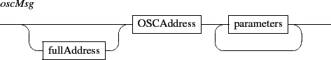

Next: 13.2.1 Graphic signal default
Up: 13. Signals and graphic
Previous: 13.1.3 Signals projection.
Contents
Index
13.2 Graphic signals.
A graphic signal is created in the standard scene address space. A simple graphic signal is defined by a parallel signal controling the y value, the graphic thickness and the color at each time position. The color is encoded as HSBA colors (Hue, Saturation, Brightness, Transparency). The mapping of a signal value ([-1,1]) to the HSBA color space is given by the table 13.1.
Figure 13.2:
The HSB color space
|
|
Table 13.1:
HSBA color values.
| parameter |
mapping |
|
| hue |
[-1,1] |
corresponds to [-180,180] angular degree where 0 is red. |
| saturation |
[-1,1] |
corresponds 0% to 100% saturation. |
| brigthness |
[-1,1] |
corresponds 0% (black) to 100% (white) brithgness. |
| transparency |
[-1,1] |
corresponds 0% to 100% tranparency. |
A graphic signal responds to common component messages (section 4 p.![[*]](crossref.gif) ). In addition, it supports the following messages:
). In addition, it supports the following messages:

- the set message is followed by the graph type and a signalIdentifier, where signalIdentifier must correspond to an existing signal from the signal address space. In case signalIdentifier doesn't exist, then a new signal is created at the signalIdentifier address with default values.
- the get message is the counterpart of the set message (see section 7 p.).
- the get dimension message gives the number of graphic signals in parallel (see section 13.2.2 p.).
Subsections
Next: 13.2.1 Graphic signal default
Up: 13. Signals and graphic
Previous: 13.1.3 Signals projection.
Contents
Index
Grame - Interlude project [ANR-08-CORD-010]